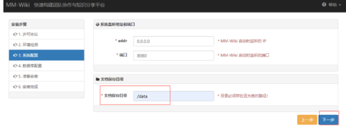
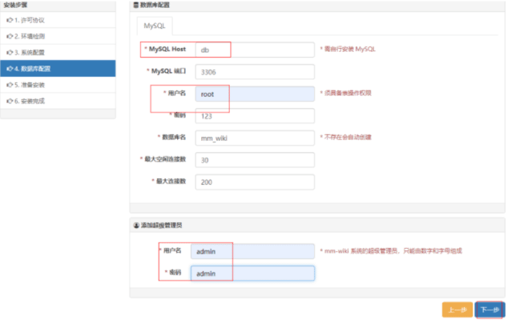
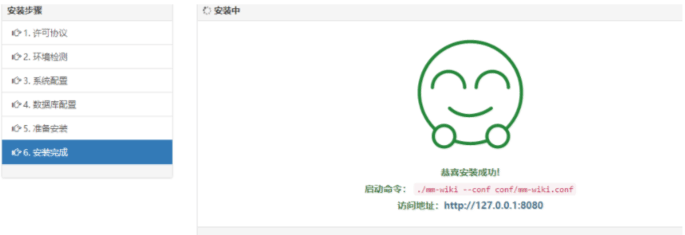
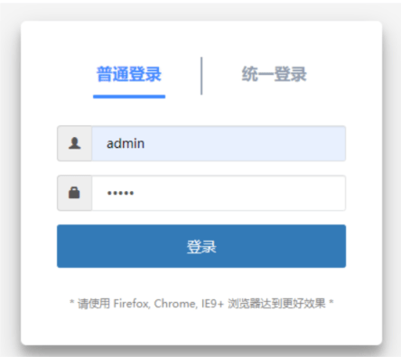

MMwiki
- TAGS: Other-service
MMwiki
准备
docker 20.10 docker-compose 1.27.4
数据库目录： /apps/work/service/mm-wiki/mysql/data
wiki数据目录：/apps/work/service/mm-wiki/wiki-data
部署
目录与配置
mkdir /apps/work/service/mm-wiki/{mysql/data,wiki-data}
cd /apps/work/service/mm-wiki/mysql/data
# mysql配置文件
cat << EOF > my.cnf
#For advice on how to change settings please see
# http://dev.mysql.com/doc/refman/5.6/en/server-configuration-defaults.html
# *** DO NOT EDIT THIS FILE. It's a template which will be copied to the
# *** default location during install, and will be replaced if you
# *** upgrade to a newer version of MySQL.
[mysqld]
basedir=/var/lib/mysql
datadir=/var/lib/mysql
socket=/var/lib/mysql/tmp/mysql.sock
user=mysql
tmpdir=/tmp
max_connections=200
character-set-server=utf8
#sql_mode=STRICT_TRANS_TABLES,NO_ZERO_IN_DATE,NO_ZERO_DATE,ERROR_FOR_DIVISION_BY_ZERO,NO_AUTO_CREATE_USER,NO_ENGINE_SUBSTITUTION
max_connections=100
character-set-server=utf8
lower_case_table_names=1
skip-name-resolve
max_connections=3000
## 服务端使用的字符集默认为8比特编码的latin1字符集
character-set-server=utf8mb4
## 创建新表时将使用的默认存储引擎
default-storage-engine=INNODB
#lower_case_table_name=1
max_allowed_packet=1024M
max_length_for_sort_data=838860
group_concat_max_len=1844674407370954752
query_cache_type=1
loose_max_statement_time=3000000
table_open_cache=4096
max_connect_errors=100000
sort_buffer_size=3M
join_buffer_size=3M
log_bin_trust_function_creators=1
#开启慢日志
log_output=file
slow_query_log=on
slow_query_log_file = /var/lib/mysql/mysql-slow.log
log_queries_not_using_indexes=on
long_query_time = 1
sql_mode = "ONLY_FULL_GROUP_BY,STRICT_TRANS_TABLES,NO_ZERO_IN_DATE,ALLOW_INVALID_DATES,ERROR_FOR_DIVISION_BY_ZERO,NO_AUTO_CREATE_USER,NO_ENGINE_SUBSTITUTION"
# Remove leading # and set to the amount of RAM for the most important data
# cache in MySQL. Start at 70% of total RAM for dedicated server, else 10%.
# innodb_buffer_pool_size = 128M
# Remove leading # to turn on a very important data integrity option: logging
# changes to the binary log between backups.
# log_bin
# These are commonly set, remove the # and set as required.
# basedir = .....
# datadir = .....
# port = .....
# server_id = .....
# socket = .....
# Remove leading # to set options mainly useful for reporting servers.
# The server defaults are faster for transactions and fast SELECTs.
# Adjust sizes as needed, experiment to find the optimal values.
# join_buffer_size = 128M
# sort_buffer_size = 2M
# read_rnd_buffer_size = 2M
#sql_mode=NO_ENGINE_SUBSTITUTION,STRICT_TRANS_TABLES
[mysqld_safe]
log-error=/var/lib/mysql/error.log
pid-file=/var/lib/mysql/mysql.pid
[mysqldump]
user=root
password=123
EOF
docker-compose文件
cd /apps/work/service/mm-wiki cat << EOF > docker-compose.yaml version: "3.9" services: mm-wiki: image: 217heidai/mm-wiki:0.2.1 container_name: mm-wiki hostname: mm-wiki volumes: - ./wiki-data:/data # mm-wiki data ports: - "8888:8080" deploy: mode: replicated replicas: 2 restart_policy: condition: on-failure delay: 5s max_attempts: 3 window: 120s resources: limits: cpus: '0.8' memory: 500M reservations: cpus: '0.8' memory: 500M networks: mm-wiki: aliases: - mm-wiki depends_on: - db db: image: mysql:5.7 container_name: mysql hostname: mysql volumes: - ./mysql/data:/var/lib/mysql - ./mysql/my.cnf:/etc/my.cnf environment: - MYSQL_ROOT_PASSWORD=123 - TZ=Asia/Shanghai deploy: restart_policy: condition: on-failure delay: 5s max_attempts: 3 window: 120s resources: limits: cpus: '0.8' memory: 500M reservations: cpus: '0.8' memory: 500M networks: mm-wiki: aliases: - db networks: mm-wiki: name: mm-wiki driver: bridge #ulimits: # nproc: 65535 # nofile: # soft: 20000 # hard: 40000 EOF
启动MMwiki
docker-compose up -d docker-compose ps
服务安装向导
第一次使用要完成服务安装向导 访问http://ip:8888
选定文件保存目录/data

数据库连接配置及管理用户密码
host: db
用户名：root
密码：123
管理用户名：admin 密码: admin


重启mmwiki docker
docker-compose restart mm-wiki
访问http://ip:8888 这时可以正常使用了

nginx代理
10.16.202.190
# cat mmwiki.tope365.com.conf server { listen 80; server_name mmwiki.tope365.com; proxy_next_upstream error timeout invalid_header; proxy_pass_header server; proxy_set_header Host $http_host; proxy_redirect off; proxy_set_header X-Real-IP $remote_addr; proxy_set_header X-Scheme $scheme; proxy_set_header X-Forwarded-For $proxy_add_x_forwarded_for; proxy_set_header Upgrade $http_upgrade; access_log logs/mmwiki_access.log main; location / { proxy_pass http://10.16.202.190:8888; } }
备份
定时任务
0 0 * * * bash /data/ops/scripts/mwiki_down.sh &>/dev/null
脚本内容
cat <<\EOF > mmwiki_down.sh #!/bin/bash # backup mmwiki space backup_dir=/data/backup/mmwiki backup() { local serveraddr='127.0.0.1:8888' local space_id=$1 local space_name=$1 # 登录 并保存cookie -c curl 'http://'$serveraddr'/author/login' \ -H 'Connection: keep-alive' \ -H 'Accept: application/json, text/javascript, */*; q=0.01' \ -H 'DNT: 1' \ -H 'X-Requested-With: XMLHttpRequest' \ -H 'User-Agent: Mozilla/5.0 (Windows NT 10.0; Win64; x64) AppleWebKit/537.36 (KHTML, like Gecko) Chrome/89.0.4389.82 Safari/537.36' \ -H 'Content-Type: application/x-www-form-urlencoded; charset=UTF-8' \ -H 'Origin: http://'$serveraddr'' \ -H 'Referer: http://'$serveraddr'/author/index' \ -H 'Accept-Language: zh-CN,zh;q=0.9,en;q=0.8' \ -H 'Cookie: mmwikissid=44ccf5d24307d32f2837242905a54c87; mmwikipassport=' \ -d 'username=downer&password=123456' \ -c cookie.txt \ --compressed \ --insecure ; sleep 1 #带着cookie访问页面 -b curl 'http://'$serveraddr'/system/space/download?space_id='${space_id}'' \ -s \ -H 'Connection: keep-alive' \ -H 'Upgrade-Insecure-Requests: 1' \ -H 'DNT: 1' \ -H 'User-Agent: Mozilla/5.0 (Windows NT 10.0; Win64; x64) AppleWebKit/537.36 (KHTML, like Gecko) Chrome/89.0.4389.82 Safari/537.36' \ -H 'Accept: text/html,application/xhtml+xml,application/xml;q=0.9,image/avif,image/webp,image/apng,*/*;q=0.8,application/signed-exchange;v=b3;q=0.9' \ -H 'Accept-Language: zh-CN,zh;q=0.9,en;q=0.8' \ -H 'Cookie: mmwikissid=44ccf5d24307d32f2837242905a54c87' \ -b cookie.txt \ --compressed \ --insecure > ${backup_dir}/${space_name}_$(date +'%F-%H').zip } main() { for i in 1 2; do backup $i done } main EOF